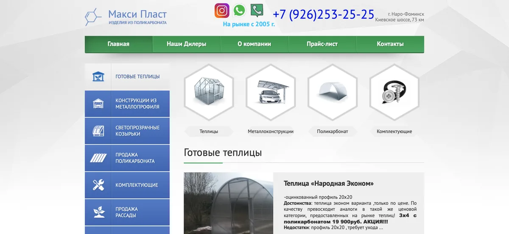
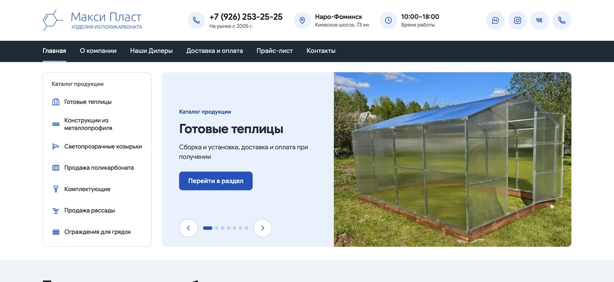
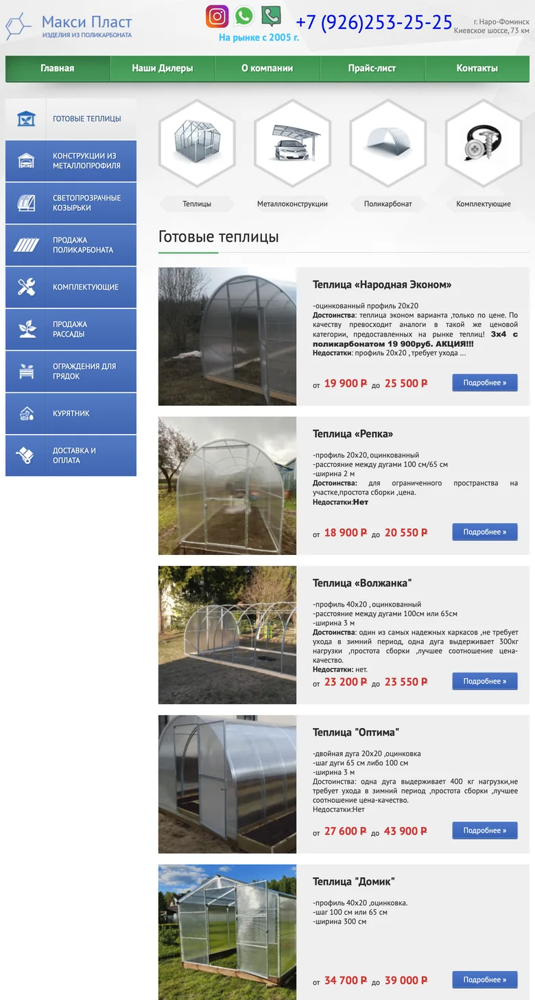
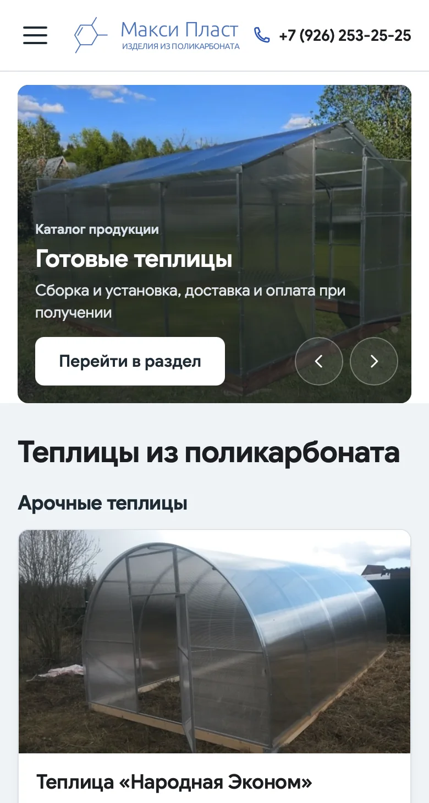
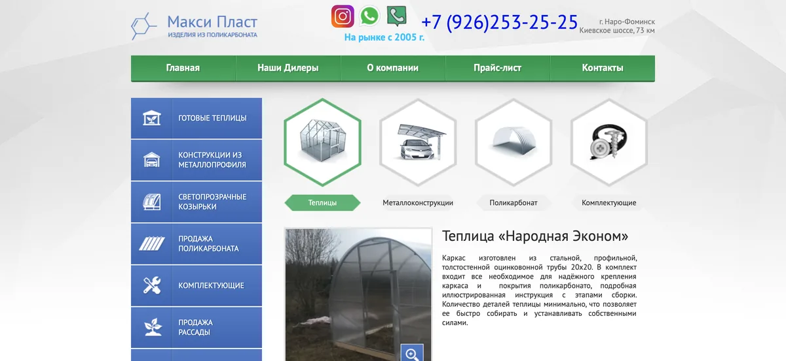
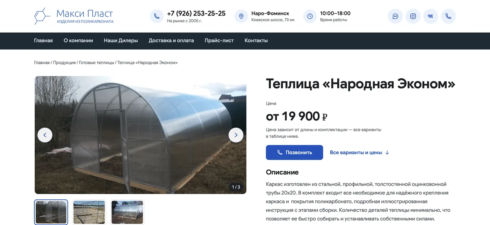
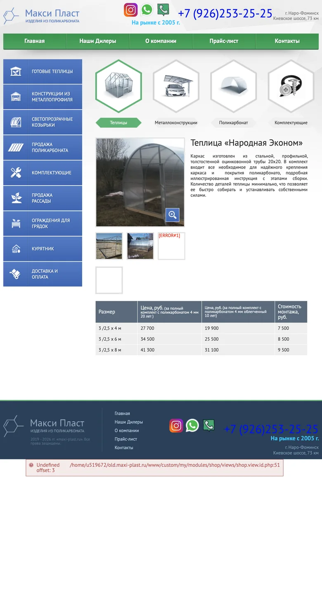
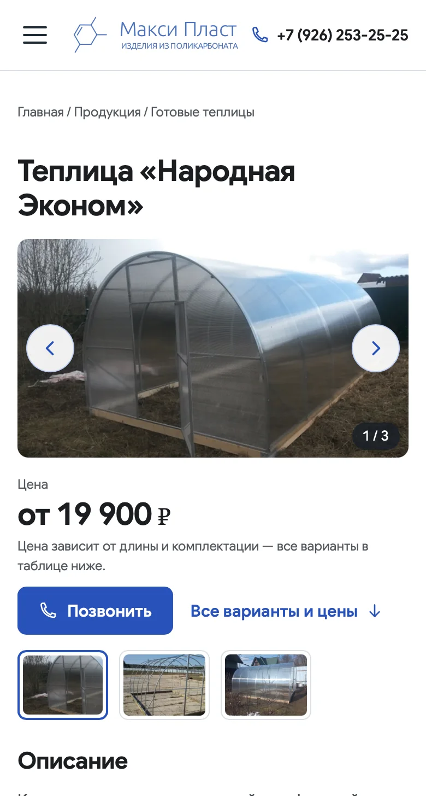
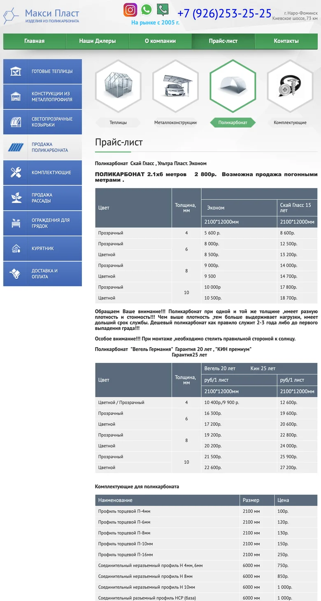
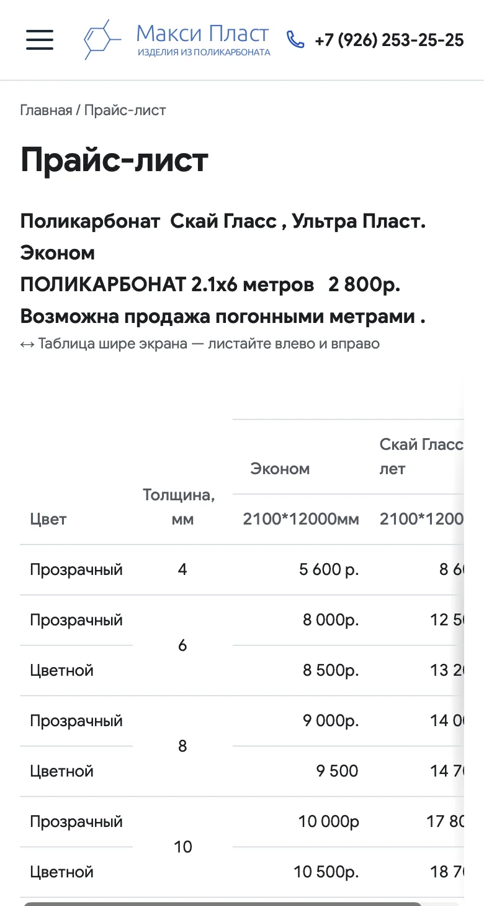

Redesigning a live website
without leaving its CMS
I redesigned a greenhouse manufacturer’s website on DIAFAN.CMS 5.4: a responsive homepage, catalog, product pages and price list. Content, prices, page URLs and SEO stayed the same, and the client edits the site in the same admin panel.
Open maxi-plast.ruVideo overview · 26 sec · with sound
Homepage on desktop




Instead of one list of 11 cards: greenhouses in three groups by shape, plus canopies. The client manages the homepage selection.
Homepage on a phone




The old template had no mobile layout. Now the phone shows 7 greenhouses and one metal structure, readable without zooming.
Product page on desktop




The gallery has arrows, a counter, swipe and photo zoom: the client plans to add more than 10 photos per product.
Product page on a phone




A buyer sees the price straight away and can call. The note under the price explains what it depends on.
Price list on a phone




Same price data. Wide tables no longer turn into tiny text.
Screenshots taken on 21.10.2026 in Safari at the same width, first screen of each page. Phone views are a 390 px width emulation. The old version has no mobile layout, so it is shown the way a mobile browser scales it down. Site text is in Russian.
- Brief and page inventory
- Design
- CMS integration
- Staging copy
- Release
DATA
Content, URLs and SEO preserved
All 67 pages open at their old addresses. Titles and descriptions did not change, apart from the agreed homepage heading.
CMS
Homepage selection from the admin panel
A “Show on homepage” checkbox in the product card. No duplicate products, no URL changes.
PROCESS
One model builds, another reviews
Claude and Codex wrote the code from my task briefs, and every stage had an independent review. The release went through a staging copy, a backup and a rollback plan.
CLIENT / PRODUCTIONLive since 19.10.2026. Code in a private repository.